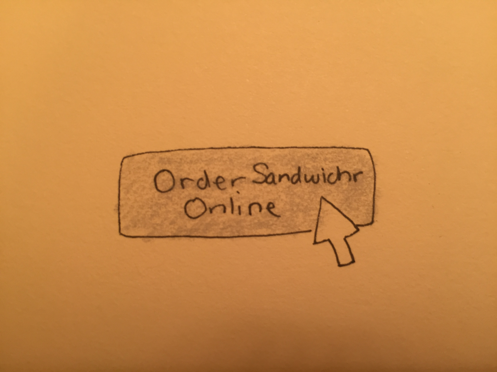
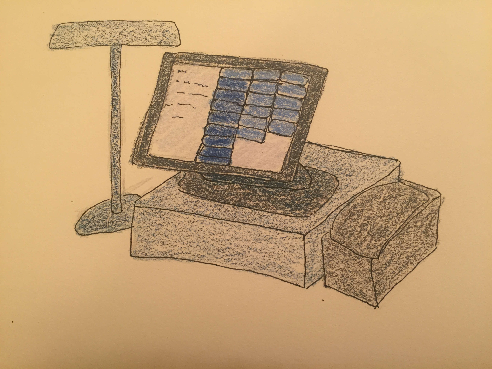
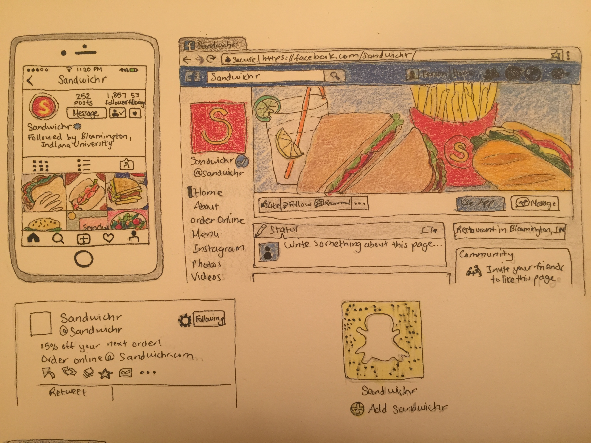
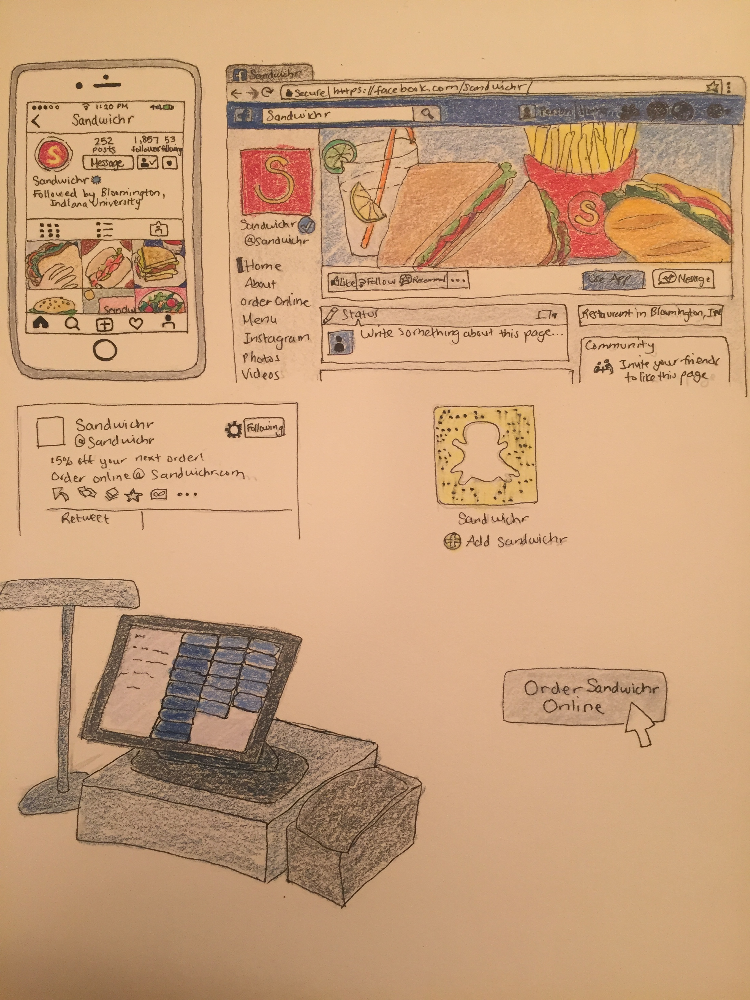

Solution
A local sandwich shop in Bloomington is becoming more popular, with that come more expectations from customers. People in the world today expect technology to be a part of everything they do, including eating. This means that the local sandwich shop needs to incorporate technology into their business in order to continue to grow in popularity.
Our team proposed a solution to this sandwich shop’s technological dilemma. We believe that through usage of social media profiles including Facebook, Instagram, Twitter, and Snapchat, they will be able to bring in more customers by posting about deals, coupons, sales, and more. We also believe that a POS, Point of Sales, system would make ringing in orders and taking care of customers a lot easier to handle. This system would have buttons for every option the customer would want, making it as simple as clicking on the right buttons to order the food for the employee. One benefit of a POS system is that it simplifies communications between the kitchen and the wait staff
(Mealey). The POS system would also make things go much more smoothly as well as cut down on time. Finally our team believes they should have a website that allows online orders. A lot of the world is going toward online ordering and even delivery.
The social media profiles are mainly being created in order to attract college students. The ability to have them follow the sandwich shop’s social media profiles makes them a lot more popular with that specific age group. Bloomington is a college town, which means that the sandwich shop’s main clientele would be these type of people. We would even use a social media management program app such as buffer in order to make it easier for the company to handle while still targeting the type of people they want to come into their shop. These types of apps make it possible for the company to manage several different social media profiles all at once (Patel).
Our team believes that people will want to follow the social media profiles and use the website because people love being about to get coupons, discounts, and other great deals. Social media has already been a way for people to get these deals for other stores, therefore, it would almost be expected for a growing sandwich shop to be on social media to give these things away as well. We believe the website will be something people want to use because in this day and age people are all about making things as time efficient as possible. The website would give people access to the menu, allow them to place their order online, and possibly even have it delivered to them, just by filling out the necessary information online.
Sketches
-

The ability to seamlessly order from home. -

Employees would process orders through a point of sale system. -

Sandwichr's web presence would exist on major social media sites. -

An overview of our full sketch.
Works Cited
Mealey, Lorri. "Why You Need A POS System." The Balance. The Balance, Web. 11 June 2017. https://www.thebalance.com/why-you-need-a-pos-system-2888877.
Patel, Sujan. "How To Quickly Master Social Media Marketing For Small Business." Forbes. Forbes Magazine, Web. 11 June 2017. https://www.forbes.com/sites/sujanpatel/2015/07/09/how-to-quickly-master-social-medi a-marketing-for-small-business/#479e5a0c6c06.